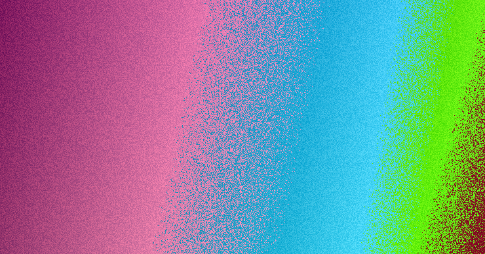

For local buyers, web design brisbane comparison Use this guide to align your project scope with realistic timelines and budgets.
Web Design Brisbane Comparison Explained
When comparing web design options in Brisbane, the first step is defining the scope. The parent page outlines that a basic brochure site sits in one price band, while a more polished lead-focused build sits higher. This distinction is crucial because a brochure site focuses on information, whereas a lead-focused build is designed to convert visitors into enquiries. You should clarify whether you need a custom build, a WordPress site you can update yourself, or an online store. The source text suggests that asking for a quote before defining the outcome can lead to comparing numbers that cover completely different deliverables. To avoid this, list the actions your site must drive, such as product sales or lead capture, before you request pricing. web design brisbane services often start with a discovery call to map these requirements.
The published ranges are most useful as a scope filter. A sensible next question is what is included in your brief. If the project needs editable pages, platform training, a redesign that protects existing rankings, or a campaign landing page tied to Google Ads, the working scope changes. The source page also points to a website cost estimator and a staged process, which suggests the early pricing conversation should be tied to project details rather than a generic package label.
Timeline Expectations
Understanding the timeline is just as important as the budget. A simple brochure site is commonly around 4 to 10 weeks. A WordPress or small business site usually takes 6 to 10 weeks. For more complex projects like eCommerce or custom builds, timelines can extend from about 12 weeks up to several months. The source text notes that timelines depend most on how quickly content and feedback come back. For a Brisbane business, this means internal readiness can matter as much as the build itself. Before you enquire, check who will approve copy, who will supply images, and how fast revisions can be turned around. If you already have an ageing site, ask how a redesign will handle pages that are already ranking.
For Brisbane businesses comparing web design brisbane options, the practical choice usually comes down to scope, budget, platform control and how quickly you can return content and feedback. The source page breaks down timing clearly, which is one of the more useful planning details. Internal teams should be prepared to provide assets and feedback within the agreed timeframe to keep the project on schedule. This preparation helps avoid delays that can push a simple brochure site past the 10-week mark or extend a custom build into several months.
Platform and Ownership
The platform you choose affects both cost and control. The source page highlights that editable platforms like WordPress allow you or your team to change text, images and pages without a developer on call. This flexibility is a major advantage for businesses that want to maintain control over their content. However, if you prefer not to handle updates, a care plan can cover changes, along with updates, backups, security and support after launch. This option provides peace of mind for busy owners who do not have the time or technical skills to manage a website.
Ownership is another key factor. The website and domain stay yours, and you are shown how to update the site yourself if you want to. This is particularly relevant for businesses that want to maintain control over their digital assets long term. The source text emphasises that you own the site and domain, and the provider shows you how to manage it. This transparency ensures that you are not locked into a service provider for ongoing changes and gives you the freedom to move or scale your digital presence as your business grows.
Local Considerations
Choosing a local Brisbane team offers practical advantages. A local team understands the market you actually sell to and is contactable in your own time zone. They know the difference between selling in Fortitude Valley and Sunnybank. The source text emphasises that the work is mobile-first, fast, well structured and built on solid SEO foundations so the site is ready to rank. However, it also makes clear that ongoing ranking results still depend on competition and content, and no honest provider can guarantee a specific position.
Local expertise also extends to understanding the specific needs of Brisbane businesses. Whether you are in the CBD, the inner-city creative precincts of Fortitude Valley, Newstead and West End or the outer suburbs like Toowong, Indooroopilly and Chermside, a local team can tailor the design to your specific audience. They can advise on local SEO strategies and ensure your site resonates with the community you are trying to reach. This local focus helps ensure that your website is not just technically sound but also strategically aligned with your market.
- Define your project goals. List the actions your site must drive, such as product sales, lead capture or brand awareness.
- Choose a platform. Decide if you need a simple brochure site, a WordPress build you can update yourself, or a custom eCommerce store.
- Prepare content and assets. Gather copy, images and any existing branding materials before you request a quote to ensure accurate pricing.
- Request a detailed quote. Ask for a breakdown of costs and timelines that aligns with your defined scope and budget.
| Site Type | Cost Range | Timeline |
|---|---|---|
| Brochure Site | $2,500 - $7,500 | 4 - 10 weeks |
| Lead-Focused Build | $7,500 - $15,000 | 6 - 10 weeks |
| eCommerce / Custom | $15,000+ | 12+ weeks |
This guide provides a comparison of web design options for Brisbane businesses.